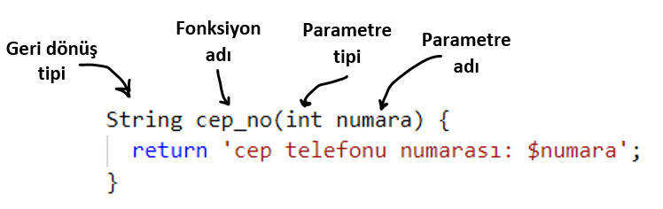

Dart Fonksiyonlar, Parametreler
Dart nesne yönelimli bir programlama dilidir ve fonksiyonlar da birer nesnedir. Fonksiyon,spesifik bir görevi yerine getiren kod bloğudur. Fonskiyonlar sınıfların içinde olduğu zaman metod olarak adlandırılırlar.
Fonksiyon Tipleri:
- Yerleşik fonksiyonlar
- Kullanıcı-tanımlı fonksiyonlar
Dart’ta Yerleşik Fonksiyonlar
Dart tarafından önceden tanımlanmış dil ile birlikte gelen Dart kütüphanelerinin bir parçası olan fonksiyonlardır. Örneğin: print(), readLineSync() yerleşik fonksiyonlardır. Dart dilinde yerleşik fonksiyonlarla dolu birçok kütüphane vardır.
Örnek
String yaz = 'Dart dilinde fonksiyonlar';
print(yaz);
}
Yukarıdaki kodda, print yazdırma görevini yerine getiren bir metoddur. yaz değişkeni metoda geçirilen argümandır, ‘Dart dilinde fonksiyonlar’ yazdırılan değerdir.
Dart’ta Kullanıcı Tanımlı fonksiyonlar
Kullanıcı tanımlı fonksiyonlar programcılar tarafından yazılan fonksiyonlardır. Programda istenilen bir görevi yerine getirmesi için fonksiyon yazılabilir. Yazılan bu fonksiyon Kullanıcı tanımlı (user-defined) fonksiyon olur.
Dart dilinde bir fonksiyonun yapısı:

Geridönüş tipi: Fonksiyonun üreteceği output’un türünü belirtir.Herhangi bir output üretmeyecekse geridönüş tipi olarak void kullanılabilir.
Fonksiyon adı: Fonksiyona herhangi bir isim verilebilir, isim verirken lowerCamelCase adlandırma kuralı takip edilmelidir. Fonksiyon bu isimle çağırılır.
Parametre: Fonksiyona girdi olarak tanımlanan isim ve veri tipidir. Fonksiyonlar parametre almak zorunda değildir, parametresiz fonksiyon da oluşturulabilir.
Return value: Fonksiyonun çıkış değeridir(output). Return value ile geridönüş tipi aynı tipte olmalıdır.
Return value, fonksiyon ismi ve parametreler, function signature olarak adlandırılır.Süslü parantezler arasındaki kod, fonksiyon gövdesi olarak adlandırılır.
Parametre ile Argüman arasındaki fark nedir?
Parametre, fonksiyon oluşturulurken fonksiyona girdi olarak tanımlanan isim ve veri tipidir. Argüman ise fonksiyon çağrılırken fonksiyona geçirilen değerdir.
Birden çok parametre kullanma
Bir Dart fonksiyonunda istenilen sayıda parametre kullanılabilir. Birden fazla parametre varsa virgül ile ayrılması gerekir.
Örnek
print('Şehir:$sehir , Ülke:$ulke');
}
Yukarıdaki örnekteki gibi parametrelere, argümanları parametrelerin tanımlandığı sırada vermek gerektiği için pozisyonel parametreler (positional parameters) denir.
Null safety ile birlikte değişkenler null olabilecekleri belirtilmedikleri sürece null olamazlar.Bir değişkeni nullable yapabilmek için o değişkenin tipinden sonra soru işareti (?) koymak gerekir. Örneğin, String? tipindeki bir değişken string de olabilir null da olabilir.
Parametreleri Opsiyonel Yapma
Yukarıdaki örnekteki fonksiyon 2 argüman alıyor peki ya fonksiyon çağrılırken hiç argüman verilmeden
sehirUlke( ) şeklinde çağrılırsa ne olur? Derleyici, sehirUlke( ) fonksiyonun 2 argüman alması
gerektiği için error verir. Peki bu fonksiyona hiç argüman verilmediğinde error yerine
“Belirtilmedi” çıktısı alabilseydik güzel olmaz mıydı? Dart dilinde bu parametreleri opsiyonel
yaparak mümkün.
Dart dilinde parametreleri opsiyonel yapmanın iki yolu
vardır: Optional Positional Parameters, Optional Named
Parameters
Optional Positional Parameters
Bir parametrenin isteğe bağlı konumsal parametre (optional positional parameter) olduğunu belirtmek için parametre köşeli parantezler içine alınmalı ve veri tipinin yanına soru işareti getirilmeli:
Örnek: Fonksiyonu oluşturma
if (ulke == null)
print ('Şehir:$sehir');
else
print ('Şehir:$sehir, Ülke:$ulke');
}
Örnek: Fonksiyonu çağırma
sehirUlkeOpsiyonel('İstanbul','Türkiye'); //Çıktı: "Şehir:İstanbul , Ülke:Türkiye"
Optional Named Parameters
İsim verilmiş parametreler “required” olarak belirtilmedikleri sürece opsiyoneldir. required olarak belirtilen parametler boş bırakılmaz, değer girilmesi gerekir. Optional Positional parametrelerden farklı olarak Named Parametreli fonksiyonlar çağrılırken değer ile birlikte parametrenin adı da belirtilmelidir. Optional named parametreler süslü parantez içinde aralarına virgül konularak belirtilirler.Eğer bir parametre opsiyonelse ve null olmamalıysa default bir değeri olmalıdır.
Örnek: Fonksiyonu oluşturma
if(bolge == null && ulke == null)
print ('Şehir: $sehir');
else if(bolge != null && ulke == null)
print ('Şehir: $sehir, Bölge: $bolge');
else if(bolge != null && ulke != null)
print ('Şehir: $sehir, Bölge: $bolge, Ülke: $ulke');
}
Örnek: Fonksiyonu çağırma
Default parametre değerleri
Optional positional ve optional named parametrelere default değerler = ile verilebilir. Hiçbir default değer verilmediğinde, default değer null’dur.
Örnek: Fonksiyonu oluşturma
{
print('$nereden $nereye $olay başarıyla gerçekleşti.');
}
Örnek: Fonksiyonu çağırma
//Çıktı: "Dünyadan Merkür'e yolculuk başarıyla gerçekleşti."